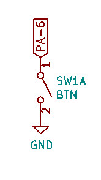
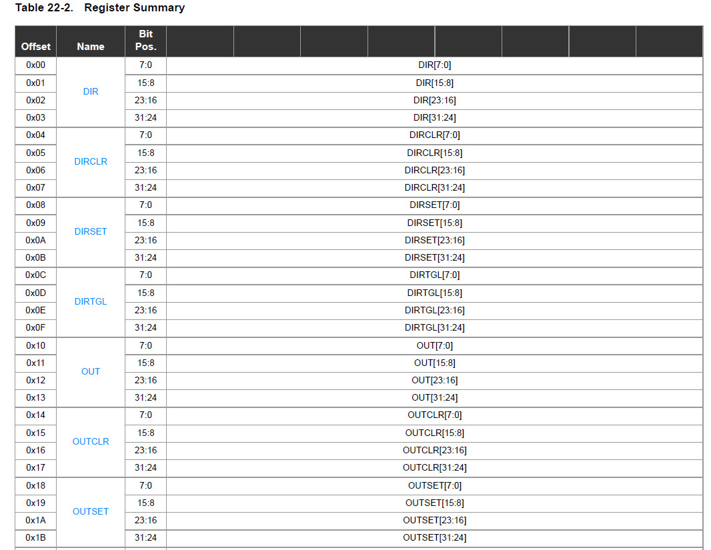
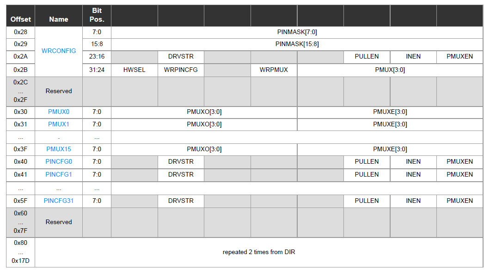
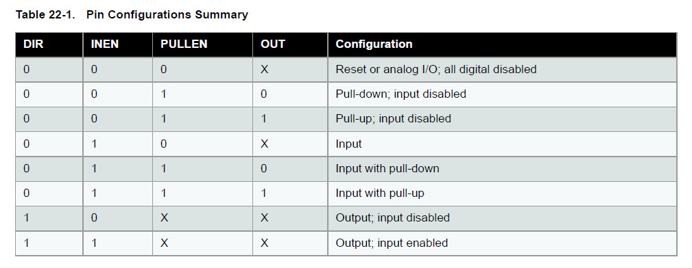
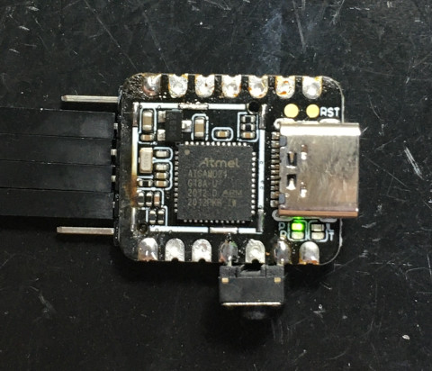
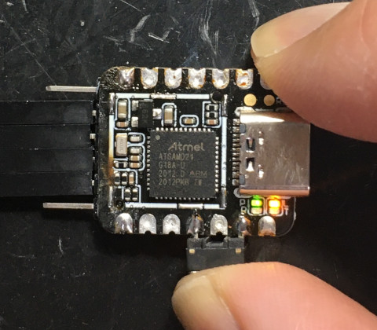

參考資訊：
https://github.com/dwelch67/atsamd_samples
https://cdn.sparkfun.com/datasheets/Dev/Arduino/Boards/Atmel-42181-SAM-D21_Datasheet.pdf
按鍵腳位(PA-6)




.cpu cortex-m0
.thumb
.equiv PORT_BASE, 0x41004400
.equiv PORT_A, 0x00
.equiv PORT_DIR, 0x00
.equiv PORT_OUT, 0x10
.equiv PORT_IN, 0x20
.equiv PORT_PINCFG6, 0x46
.thumb_func
.global _start
_start:
.word 0x20001000
.word reset
.word hang
.word hang
.word hang
.word hang
.word hang
.word hang
.word hang
.word hang
.word hang
.word hang
.word hang
.word hang
.word hang
.word hang
.thumb_func
reset:
ldr r0, =PORT_BASE
ldr r1, =(1 << 17)
str r1, [r0, #(PORT_A + PORT_DIR)]
ldr r1, =0xffffffff
str r1, [r0, #(PORT_A + PORT_OUT)]
ldr r1, =(1 << 2) | (1 << 1)
ldr r2, =PORT_BASE + PORT_A + PORT_PINCFG6
strb r1, [r2]
0:
ldr r1, [r0, #(PORT_A + PORT_IN)]
lsl r1, #11
ldr r2, =(1 << 6)
orr r1, r2
str r1, [r0, #(PORT_A + PORT_OUT)]
b 0b
.thumb_func
hang:
b .
.end
完成

